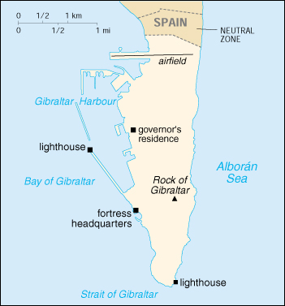

{kind=link}


| Gibraltar |
|
|  | |
| Introduction |
Background: Strategically important Gibraltar was ceded to Great Britain by Spain in 1713. In a 1967 referendum, Gibraltarians ignored Spanish pressure and voted overwhelmingly to remain a British dependency.
| Geography |
Location: Southwestern Europe, bordering the Strait of Gibraltar, which links the Mediterranean Sea and the North Atlantic Ocean, on the southern coast of Spain
Geographic coordinates: 36 11 N, 5 22 W
Map references: Europe
Area:
total:
6.5 sq km
land:
6.5 sq km
water:
0 sq km
Area - comparative: about 11 times the size of The Mall in Washington, DC
Land boundaries:
total:
1.2 km
border countries:
Spain 1.2 km
Coastline: 12 km
Maritime claims:
territorial sea:
3 nm
Climate: Mediterranean with mild winters and warm summers
Terrain: a narrow coastal lowland borders the Rock of Gibraltar
Elevation extremes:
lowest point:
Mediterranean Sea 0 m
highest point:
Rock of Gibraltar 426 m
Natural resources: NEGL
Land use:
arable land:
0%
permanent crops:
0%
permanent pastures:
0%
forests and woodland:
0%
other:
100% (1993 est.)
Irrigated land: NA sq km
Natural hazards: NA
Environment - current issues: limited natural freshwater resources; large concrete or natural rock water catchments collect rain water
Geography - note: strategic location on Strait of Gibraltar that links the North Atlantic Ocean and Mediterranean Sea
| People |
Population: 29,481 (July 2000 est.)
Age structure:
0-14 years:
21% (male 3,167; female 3,013)
15-64 years:
65% (male 10,141; female 8,925)
65 years and over:
14% (male 1,769; female 2,466) (2000 est.)
Population growth rate: 0.91% (2000 est.)
Birth rate: 14.14 births/1,000 population (2000 est.)
Death rate: 8.45 deaths/1,000 population (2000 est.)
Net migration rate: 3.39 migrant(s)/1,000 population (2000 est.)
Sex ratio:
at birth:
1.05 male(s)/female
under 15 years:
1.05 male(s)/female
15-64 years:
1.14 male(s)/female
65 years and over:
0.72 male(s)/female
total population:
1.05 male(s)/female (2000 est.)
Infant mortality rate: 5.6 deaths/1,000 live births (2000 est.)
Life expectancy at birth:
total population:
78.95 years
male:
76.09 years
female:
81.96 years (2000 est.)
Total fertility rate: 2.15 children born/woman (2000 est.)
Nationality:
noun:
Gibraltarian(s)
adjective:
Gibraltar
Ethnic groups: Italian, English, Maltese, Portuguese, Spanish
Religions: Roman Catholic 76.9%, Church of England 6.9%, Muslim 6.9%, Jewish 2.3%, none or other 7% (1991)
Languages: English (used in schools and for official purposes), Spanish, Italian, Portuguese, Russian
Literacy:
definition:
NA
total population:
above 80%
male:
NA%
female:
NA%
| Government |
Country name:
conventional long form:
none
conventional short form:
Gibraltar
Data code: GI
Dependency status: overseas territory of the UK
Government type: NA
Capital: Gibraltar
Administrative divisions: none (overseas territory of the UK)
Independence: none (overseas territory of the UK)
National holiday: Commonwealth Day (second Monday of March)
Constitution: 30 May 1969
Legal system: English law
Suffrage: 18 years of age; universal, plus other UK subjects who have been residents six months or more
Executive branch:
chief of state:
Queen ELIZABETH II (since 6 February 1952), represented by Governor and Commander-in-Chief, the Right Honorable Sir Richard LUCE (since 24 February 1997); note - a new governor has been appointed and will arrive in March 2000
head of government:
Chief Minister Peter CARUANA (since 17 May 1996)
cabinet:
Council of Ministers appointed from among the 15 elected members of the House of Assembly by the governor in consultation with the chief minister
note:
there is also a Gibraltar Council that advises the governor
elections:
none; the monarch is hereditary; governor appointed by the monarch; chief minister appointed by the governor
Legislative branch:
unicameral House of Assembly (18 seats - 15 elected by popular vote, one appointed for the Speaker, and two ex officio members; members serve four-year terms)
elections:
last held 10 February 2000 (next to be held NA 2004)
election results:
percent of vote by party - SD 54%, GSLA 40%; seats by party - NA
Judicial branch: Supreme Court; Court of Appeal
Political parties and leaders: Gibraltar Labor Party/Association for the Advancement of Civil Rights or GCL/AACR [Adolfo CANEPA]; Gibraltar Liberal Party or GLP (has become the Gibraltar National Party or NP) [Joe GARCIA]; Gibraltar Social Democrats or SD [Peter CARUANA]; Gibraltar Socialist Labor Party or SL [Joe BOSSANO]; Gibraltar Socialist Liberal Alliance or GSLA [Joe BOSSANO] (includes SL and GLP)
Political pressure groups and leaders: Chamber of Commerce; Gibraltar Representatives Organization; Housewives Association
International organization participation: Interpol (subbureau)
Diplomatic representation in the US: none (overseas territory of the UK)
Diplomatic representation from the US: none (overseas territory of the UK)
Flag description: two horizontal bands of white (top, double width) and red with a three-towered red castle in the center of the white band; hanging from the castle gate is a gold key centered in the red band
| Economy |
Economy - overview: Gibraltar benefits from an extensive shipping trade, offshore banking, and its position as an international conference center. The British military presence has been sharply reduced and now contributes about 11% to the local economy. The financial sector accounts for 20% of GDP; tourism (almost 6 million visitors in 1998), shipping services fees, and duties on consumer goods also generate revenue. In recent years, Gibraltar has seen major structural change from a public to a private sector economy, but changes in government spending still have a major impact on the level of employment.
GDP: purchasing power parity - $500 million (1997 est.)
GDP - real growth rate: NA%
GDP - per capita: purchasing power parity - $17,500 (1997 est.)
GDP - composition by sector:
agriculture:
NA%
industry:
NA%
services:
NA%
Population below poverty line: NA%
Household income or consumption by percentage share:
lowest 10%:
NA%
highest 10%:
NA%
Inflation rate (consumer prices): 1.5% (1998)
Labor force: 14,800 (including non-Gibraltar laborers)
Labor force - by occupation: services 60%, industry 40%, agriculture NEGL%
Unemployment rate: 13.5% (1996)
Budget:
revenues:
$119.3 million
expenditures:
$122.1 million, including capital expenditures of $NA (FY96/97)
Industries: tourism, banking and finance, ship-building and repairing; support to large UK naval and air bases; tobacco, mineral water, beer, canned fish
Industrial production growth rate: NA%
Electricity - production: 90 million kWh (1998)
Electricity - production by source:
fossil fuel:
100%
hydro:
0%
nuclear:
0%
other:
0% (1998)
Electricity - consumption: 84 million kWh (1998)
Electricity - exports: 0 kWh (1998)
Electricity - imports: 0 kWh (1998)
Agriculture - products: none
Exports: $81.1 million (f.o.b., 1997)
Exports - commodities: (principally reexports) petroleum 51%, manufactured goods 41%, other 8%
Exports - partners: UK, Morocco, Portugal, Netherlands, Spain, US, Germany
Imports: $492 million (c.i.f., 1997)
Imports - commodities: fuels, manufactured goods, and foodstuffs
Imports - partners: UK, Spain, Japan, Netherlands
Debt - external: $NA
Economic aid - recipient: $NA
Currency: 1 Gibraltar pound = 100 pence
Exchange rates: Gibraltar pounds per US$1 - 0.6092 (January 2000), 0.6180 (1999), 0.6037 (1998), 0.6106 (1997), 0.6403 (1996), 0.6335 (1995); note - the Gibraltar pound is at par with the British pound
Fiscal year: 1 July - 30 June
| Communications |
Telephones - main lines in use: 17,000 (1995)
Telephones - mobile cellular: 1,161 (1999)
Telephone system:
adequate, automatic domestic system and adequate international facilities
domestic:
automatic exchange facilities
international:
radiotelephone; microwave radio relay; satellite earth station - 1 Intelsat (Atlantic Ocean)
Radio broadcast stations: AM 1, FM 5, shortwave 0 (1998)
Radios: 37,000 (1997)
Television broadcast stations: 1 (plus three low-power repeaters) (1997)
Televisions: 10,000 (1997)
Internet Service Providers (ISPs): NA
| Transportation |
Railways:
total:
NA km; 1.000-m gauge system in dockyard area only
Highways:
total:
49.9 km
paved:
49.9 km
unpaved:
0 km
Pipelines: 0 km
Ports and harbors: Gibraltar
Merchant marine:
total:
26 ships (1,000 GRT or over) totaling 477,183 GRT/752,644 DWT
ships by type:
bulk 1, cargo 2, chemical tanker 2, container 4, multi-functional large load carrier 1, passenger 1, petroleum tanker 13, roll-on/roll-off 2 (1999 est.)
Airports: 1 (1999 est.)
Airports - with paved runways:
total:
1
1,524 to 2,437 m:
1 (1999 est.)
| Military |
Military branches: British Army, Royal Navy, Royal Air Force
Military - note: defense is the responsibility of the UK
| Transnational Issues |
Disputes - international: source of friction between Spain and the UK